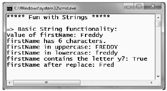
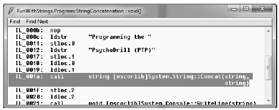
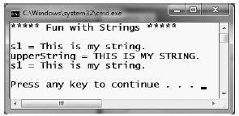
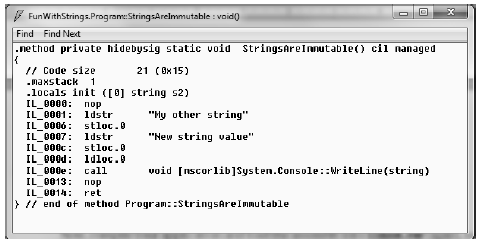
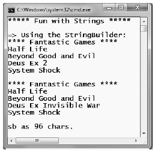

System.String provides a number of methods you would expect from such a utility class, including methods that return the length of the character data, find substrings within the current string, and convert to and from uppercase/lowercase. Table 3-5 lists some (but by no means all) of the interesting members.
| String Member | Meaning in Life |
|---|---|
| Length | This property returns the length of the current string |
| Compare() | This static method compares two strings. |
| Contains() | This method determine whether a string contains a specific subtstring. |
| Equals() | This method tests whether two string objects contain identical character data. |
| Format() | This static method formats a string using other primitives (e.g., numerical data, other strings) and the {0} notation examined earlier. |
| Insert() | This method inserts a string within a given string. |
| PadLeft() PadRight() | These methods are used to pad a string with some characters. |
| Remove() Replace() | Use these methods to receive a copy of a string with modifications (characters removed or replaced). |
| Split() | This method returns a String array containing the substrings in this instance that are delimited by elements of a specified char array or string array. |
| Trim() | This method removes all occurrences of a set of specified characters from the beginning and end of the current string. |
| ToUpper() ToLower() | These methods create a copy of the current string in uppercase or lowercase format, respectively. |
Working with the members of System.String is as you would expect. Simply declare a string variable and make use of the provided functionality via the dot operator. Be aware that a few of the members of System.String are static members and are, therefore, called at the class (rather than the object) level. Assume you have created a new Console Application project named FunWithStrings. Author the following method, which should be called from within Main():
static void BasicStringFunctionality() { Console.WriteLine("=> Basic String functionality:"); string firstName = "Freddy"; Console.WriteLine("Value of firstName: {0}", firstName); Console.WriteLine("firstName has {0} characters.", firstName.Length); Console.WriteLine("firstName in uppercase: {0}", firstName.ToUpper()); Console.WriteLine("firstName in lowercase: {0}", firstName.ToLower()); Console.WriteLine("firstName contains the letter y?: {0}", firstName.Contains("y")); Console.WriteLine("firstName after replace: {0}", firstName.Replace("dy", "")); Console.WriteLine(); }
Not too much to say here, as this method simply invokes various members, such as ToUpper() and Contains(), on a local string variable to yield various formats and transformations. Figure 3-9 shows the initial output.
Figure 3-9 Basic string manipulation
While this output may not seem too surprising, the output seen via calling the Replace() method is a tad bit misleading. In reality, the firstName variable has not changed at all; rather, we receive back a new string in a modified format. We will revisit the immutable nature of strings in just a few moments.
string variables can be connected together to build larger strings via the C# + operator. As you may know, this technique is formally termed string concatenation. Consider the following new helper function:
static void StringConcatenation() { Console.WriteLine("=> String concatenation:"); string s1 = "Programming the "; string s2 = "PsychoDrill (PTP)"; string s3 = s1 + s2; Console.WriteLine(s3); Console.WriteLine(); }
You may be interested to know that the C# + symbol is processed by the compiler to emit a call to the static String.Concat() method. In fact, if you were to compile the previous code and open the assembly within ildasm.exe (see Chapter 1), you would find the common intermediate language (CIL) code shown in Figure 3-10.
Figure 3-10The C# + operator results in a call to String.Concat()
Given this, it is possible to perform string concatenation by calling String.Concat() directly (although you really have not gained anything by doing so�in fact, you have incurred additional keystrokes!).
static void StringConcatenation() { Console.WriteLine("=> String concatenation:"); string s1 = "Programming the "; string s2 = "PsychoDrill (PTP)"; string s3 = String.Concat(s1, s2); Console.WriteLine(s3); Console.WriteLine(); }
As in other C-based languages, C# string literals may contain various escape characters, which qualify how the character data should be printed to the output stream. Each escape character begins with a backslash, followed by a specific token. In case you are a bit rusty on the meanings behind these escape characters, Table 3-6 lists the more common options.
Table 3-6. String Literal Escape Characters
| Character | Meaning in Life |
|---|---|
| \' | Inserts a single quote into a string literal. |
| \" | Inserts a double quote into a string literal. |
| \\ | Inserts a backslash into a string literal. This can be quite helpful when defining file or network paths. |
| \a | Triggers a system alert (beep). For console programs, this can be an audio clue to the user. |
| \n | Inserts a new line (on Windows platforms). |
| \r | Inserts a carriage return. |
| \t | Inserts a horizontal tab into the string literal. |
For example, to print a string that contains a tab between each word, you can make use of the \t escape character. Or assume you wish to create a string literal that contains quotation marks, another that defines a directory path, and a final string literal that inserts three blank lines after printing the character data. To do so without compiler errors, you would need to make use of the \", \\, and \n escape characters. Also, to annoy any person within a 10-foot radius from you, notice that I have embedded an alarm within each string literal (to trigger a beep). Consider the following:
static void EscapeChars() { Console.WriteLine("=> Escape characters:\a"); string strWithTabs = "Model\tColor\tSpeed\tPet Name\a "; Console.WriteLine(strWithTabs); Console.WriteLine("Everyone loves \"Hello World\"\a "); Console.WriteLine("C:\\MyApp\\bin\\Debug\a "); // Adds a total of 4 blank lines (then beep again!). Console.WriteLine("All finished.\n\n\n\a "); Console.WriteLine(); }
When you prefix a string literal with the @ symbol, you have created what is termed a verbatim string. Using verbatim strings, you disable the processing of a literal's escape characters and print out a string as is. This can be most useful when working with strings representing directory and network paths. Therefore, rather than making use of \\ escape characters, you can simply write the following:
// The following string is printed verbatim // thus, all escape characters are displayed. Console.WriteLine(@"C:\MyApp\bin\Debug");
Also note that verbatim strings can be used to preserve white space for strings that flow over multiple lines.
// White space is preserved with verbatim strings. string myLongString = @"This is a very very very long string"; Console.WriteLine(myLongString);
Using verbatim strings, you can also directly insert a double quote into a literal string by doubling the " token.
Console.WriteLine(@"Cerebus said ""Darrr! Pret-ty sun-sets""");
As fully explained in Chapter 4, a reference type is an object allocated on the garbage-collected managed heap. By default, when you perform a test for equality on reference types (via the C# == and != operators), you will be returned true if the references are pointing to the same object in memory. However, even though the string data type is indeed a reference type, the equality operators have been redefined to compare the values of string objects, not the object in memory to which they refer.
static void StringEquality() { Console.WriteLine("=> String equality:"); string s1 = "Hello!"; string s2 = "Yo!"; Console.WriteLine("s1 = {0}", s1); Console.WriteLine("s2 = {0}", s2); Console.WriteLine(); // Test these strings for equality. Console.WriteLine("s1 == s2: {0}", s1 == s2); Console.WriteLine("s1 == Hello!: {0}", s1 == "Hello!"); Console.WriteLine("s1 == HELLO!: {0}", s1 == "HELLO!"); Console.WriteLine("s1 == hello!: {0}", s1 == "hello!"); Console.WriteLine("s1.Equals(s2): {0}", s1.Equals(s2)); Console.WriteLine("Yo.Equals(s2): {0}", "Yo!".Equals(s2)); Console.WriteLine(); }
The C# equality operators perform a case-sensitive, character-by-character equality test on string objects. Therefore, "Hello!" is not equal to "HELLO!", which is different from "hello!". Also, keeping the connection between string and System.String in mind, notice that we are able to test for equality using the Equals() method of String as well as the baked-in equality operators. Finally, given that every string literal (such as "Yo") is a valid System.String instance, we are able to access string-centric functionality from a fixed sequence of characters.
One of the interesting aspects of System.String is that once you assign a string object with its initial value, the character data cannot be changed. At first glance, this might seem like a flat-out lie, given that we are always reassigning strings to new values and because the System.String type defines a number of methods that appear to modify the character data in one way or another (such as uppercasing and lowercasing). However, if you look more closely at what is happening behind the scenes, you will notice the methods of the string type are, in fact, returning you a brand-new string object in a modified format.
static void StringsAreImmutable() { // Set initial string value. string s1 = "This is my string."; Console.WriteLine("s1 = {0}", s1); // Uppercase s1? string upperString = s1.ToUpper(); Console.WriteLine("upperString = {0}", upperString); // Nope! s1 is in the same format! Console.WriteLine("s1 = {0}", s1); }
If you examine the relevant output in Figure 3-11, you can verify that the original string object (s1) is not uppercased when calling ToUpper(), rather you are returned a copy of the string in a modified format.
Figure 3-11 Strings are immutable
The same law of immutability holds true when you use the C# assignment operator. To illustrate, comment out (or delete) any existing code within StringsAreImmutable() (to decrease the amount of generated CIL code) and add the following code statements:
static void StringAreImmutable() { string s2 = "My other string"; s2 = "New string value"; }
Now, compile your application and load the assembly into ildasm.exe (again, see Chapter 1). Figure 3-12 shows what you would find if you were to generate CIL code for the StringsAreImmutable() method.
Figure 3-12 Assigning a value to a string object results in a new string object
Although we have yet to examine the low-level details of the CIL, note the numerous calls to the ldstr (load string) opcode. Simply put, the ldstr opcode of the CIL loads a new string object on the managed heap. The previous string object that contained the value "My other string." will eventually be garbage collected.
So, what exactly are we to gather from this insight? In a nutshell, the string class can be inefficient and result in bloated code if misused, especially when performing string concatenation. If you need to represent basic character data such as a U.S. Social Security number, first or last names, or simple bits of text used within your application, the string class is the perfect choice.
However, if you are building an application that makes heavy use of textual data (such as a word processing program), it would be a very bad idea to represent the word processing data using string objects, as you will most certainly (and often indirectly) end up making unnecessary copies of string data. So what is a programmer to do? Glad you asked.
Given that the string type can be inefficient when used with reckless abandon, the .NET base class libraries provide the System.Text namespace. Within this (relatively small) namespace lives a class named StringBuilder. Like the System.String class, the StringBuilder defines methods that allow you to replace or format segments, for example. When you wish to use this type in your C# code files, your first step is to make sure the following namespace is imported into your code file:
// StringBuilder lives here! using System.Text;
What is unique about the StringBuilder is that when you call members of this type, you are directly modifying the object's internal character data (making it more efficient), not obtaining a copy of the data in a modified format. When you create an instance of the StringBuilder, you can supply the object's initial startup values via one of many constructors. If you are new to the topic of constructors, simply understand that constructors allow you to create an object with an initial state when you apply the new keyword. Consider the following usage of StringBuilder:
static void FunWithStringBuilder() { Console.WriteLine("=> Using the StringBuilder:"); StringBuilder sb = new StringBuilder("**** Fantastic Games ****"); sb.Append("\n"); sb.AppendLine("Half Life"); sb.AppendLine("Beyond Good and Evil"); sb.AppendLine("Deus Ex 2"); sb.AppendLine("System Shock"); Console.WriteLine(sb.ToString()); sb.Replace("2", "Invisible War"); Console.WriteLine(sb.ToString()); Console.WriteLine("sb has {0} chars.", sb.Length); Console.WriteLine(); }
Here we have constructed a StringBuilder set to the initial value "**** Fantastic Games ****". As you can see, we are appending to the internal buffer and are able to replace or remove characters at will. By default, a StringBuilder is only able to initially hold a string of 16 characters or fewer (but will expand automatically if necessary); however, this default starting value can be changed via an additional constructor argument.
// Make a StringBuilder with an initial size of 256. StringBuilder sb = new StringBuilder("**** Fantastic Games ****", 256);
If you append more characters than the specified limit, the StringBuilder object will copy its data into a new instance and grow the buffer by the specified limit. Figure 3-13 shows the output of the current helper function.
Figure 3-13 The StringBuilder is more efficient than string
Source Code The FunWithStrings project is located under the Chapter 3 subdirectory.